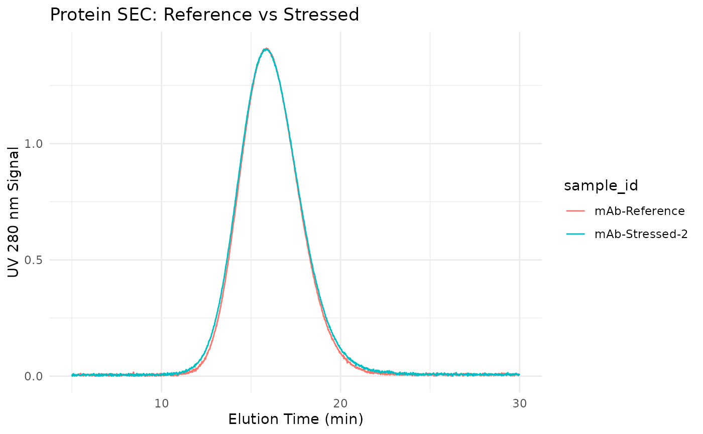

A synthetic dataset containing SEC chromatograms of a monoclonal antibody (mAb) under various stress conditions, showing monomer, dimer, higher-order aggregates, and fragments.
Format
A tibble with 6,255 rows and 9 columns:
- sample_id
Character. Sample identifier (e.g., "mAb-Reference")
- elution_time
Numeric. Elution time in minutes
- uv_280_signal
Numeric. UV detector signal at 280 nm
- uv_214_signal
Numeric. UV detector signal at 214 nm
- description
Character. Sample treatment description
- monomer_pct
Numeric. Known monomer percentage
- dimer_pct
Numeric. Known dimer percentage
- hmw_pct
Numeric. Known high molecular weight aggregate percentage
- fragment_pct
Numeric. Known fragment percentage
Details
The dataset simulates a typical mAb (~150 kDa) under various conditions:
Reference standard (>98% monomer)
Heat-stressed samples (40°C for 1-2 weeks)
Aged sample (12-month stability)
Freeze-thaw stressed sample
Species Present:
High molecular weight (HMW) aggregates (~600 kDa)
Dimer (~300 kDa)
Monomer (~150 kDa)
Fragments (~50 kDa, Fab-like)
Typical Workflow:
Load data and apply baseline correction
Use
step_sec_aggregatesto identify and quantify speciesCalculate percent area for each species
Compare to acceptance criteria
Examples
data(sec_protein)
# View sample conditions
unique(sec_protein[, c("sample_id", "description", "monomer_pct")])
#> # A tibble: 5 × 3
#> sample_id description monomer_pct
#> <chr> <chr> <dbl>
#> 1 mAb-Reference Reference standard 98.5
#> 2 mAb-Stressed-1 Heat stress 40C 1wk 94
#> 3 mAb-Stressed-2 Heat stress 40C 2wk 88
#> 4 mAb-Aged 12 month stability 96
#> 5 mAb-Freeze-Thaw 5x freeze-thaw 95.5
# Plot stressed vs reference
if (requireNamespace("ggplot2", quietly = TRUE)) {
library(ggplot2)
library(dplyr)
sec_protein |>
filter(sample_id %in% c("mAb-Reference", "mAb-Stressed-2")) |>
ggplot(aes(elution_time, uv_280_signal, color = sample_id)) +
geom_line() +
labs(
x = "Elution Time (min)",
y = "UV 280 nm Signal",
title = "Protein SEC: Reference vs Stressed"
) +
theme_minimal()
}
